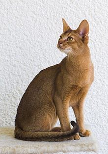
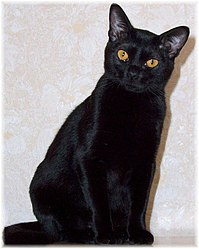
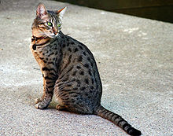
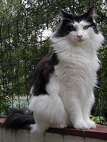

Abyssinian
American Bobtail
American Curl
American Shorthair
American Wirehair
Australian Mist
Balinese
Bengal
Birman

Bombay
British Longhair
British Shorthair

Burmese

Burmilla
Chartreux

Chausie
Cornish Rex
Cymric
Devon Rex
\Donskoy
Egyptian Mau
Exotic Shorthair

Havana
Himalayan
Japanese Bobtail
Khao Manee
Korat
Kurilian Bobtail
LaPerm
Lykoi
Maine Coon
Manx
Minuet
Munchkin
Nebelung
Norwegian Forest
Ocicat
Oriental Longhair
Oriental Shorthair
Persian

Peterbald

Pixiebob
Ragdoll
Russian Blue
Savannah
Scottish Fold
Selkirk Rex
Siamese